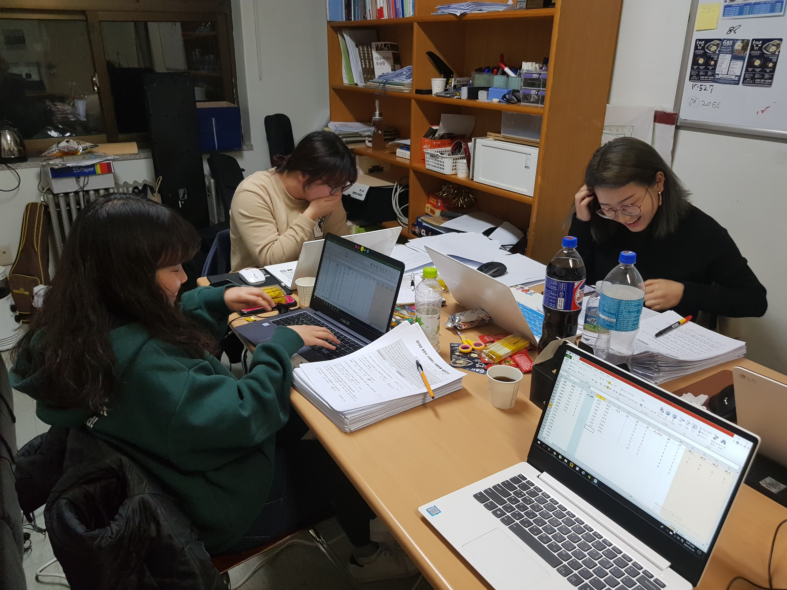
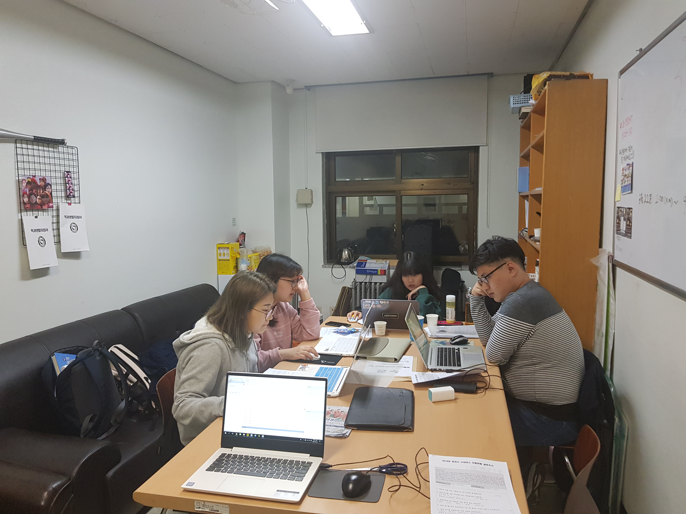

무사히 설문조사를 마친 여러분께 남은 마지막 관문은 코딩입니다. 우리는 설문결과를 얻기 위해 코딩을 해야합니다. 하는 방법은 모두 배웠으니 잘 하시리라 믿습니다.
먼저 설문조사지의 내용을 csv 파일로 만들어야 합니다. 이 과정이 매우 오래 걸리고 또 가장 어렵습니다. 버스 정류장명을 찾아 코드를 입력하고 응답한 결과에 맞게 번호를 입력합니다. 여기서 몇 가지 고려해야 할 점이 있습니다. 변수 처리를 똑같이 해야합니다. 다행이 매뉴얼이 있으니 그것을 참고하면 되겠군요. 틀리지 않도록 주의하시기 바랍니다.
입력 마치셨나요? 그럼 코딩을 시작해봅시다. 이전에 배운 STATA 프로그램을 사용합시다. 우리가 원하는 결과에 맞는 코드를 입력해 결과를 도출합니다. 이때 주의해야할 점은 코드명을 정확하게 입력해야 합니다. 한 글자라도 틀리면 결과가 나오지 않으니 꼼꼼하게 확인하세요. 각 항목별 결과와 나이대별 환승 횟수, 환승 횟수에 따른 버스 이용 시간, 세대별 선호하는 버스 이용방법 등의 결과가 필요합니다.
이렇게해서 코딩을 모두 완료했군요. 여기까지 오신 여러분 정말 수고하셨습니다. 이제 우리는 이 결과를 정리할 일만 남았습니다. 각자 조사한 결과를 다음 시간까지 정리해 보고하는걸로 합시다.
 